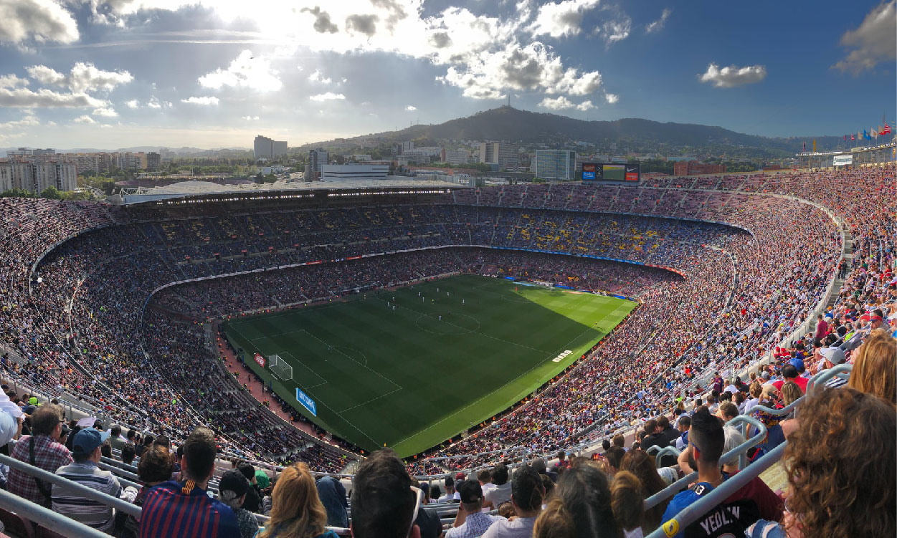
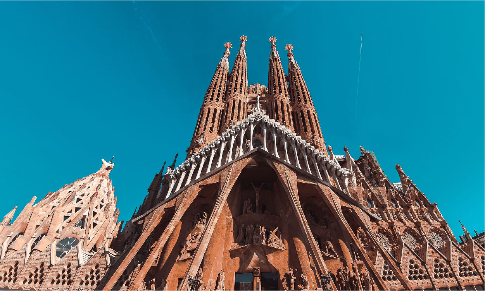
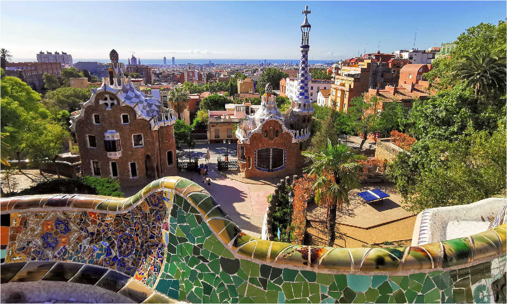

Barcelona, Spain - It's the capital of Catalonia, and has a very Spanish feel—a combination of a rich culture and architecture history, with modern buildings and paintings to enjoy, as well being bordering right on the Mediterranean Sea.
Not only that, but it has great food and drink options! Whether you're looking for a world-renowned restaurant or a local tapas bar there is something for everyone.
Camp Nou
Home to FC Barcelona, the Camp Nou stadium is one of Europes largest stadiums with a capacity of over 99 554. Built in 1957, in quickly gained it's reputation as being one of the worlds football temples.
Even to this day, there aren’t many stadiums who are able to compete with this huge place of gathering, all of them having been built or heavily renovated in the last ten years. Still, the Camp Nou is set to be renovated as well very soon.
La Sagrada Familia
This wonder of architecture is one the worlds most complex structures and designs. Still unfinished, over a 100 years after the start of construction, it remains one of the most popular tourist attractions in Spain and Barcelona.
Designed by Antoni Gaudi in 199999, it is known and renowned for its intricate design and incredible level of detail.
The La Sagrada Familia church which will give you an awe-inspiring feeling in itself while also offering plenty more to do within its grounds, like taking part in guided tours—these are free by the way!
Parc Güell
Parc Güell is an urban park on Barcelona’s most famous hill, situated in a posh area that was once an industrial zone. Its name is derived from that of its founder, the industrialist Eusebi Güell who asked Antoni Gaudí to design it in the late nineteenth century. This project failed to come to anything at the time but five decades later, in 1922, it was opened to the public as a park.
Parc Güell is a must see for tourists visiting Barcelona. Come admire the great architecture, as well as enjoy the many other attractions around it. Ride on a carousel in this beautiful park!